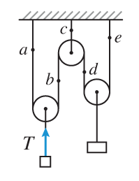

Комета массой $3⋅10^12$ кг пересекая орбиту Земли двигалась со скоростью $v_1=41$ км/с. Облетев Солнце, комета полетела обратно и вновь пересекла орбиту Земли. Её скорость $v_2$ в этот момент была точно такой же по модулю, но перпендикулярна $v_1$.
